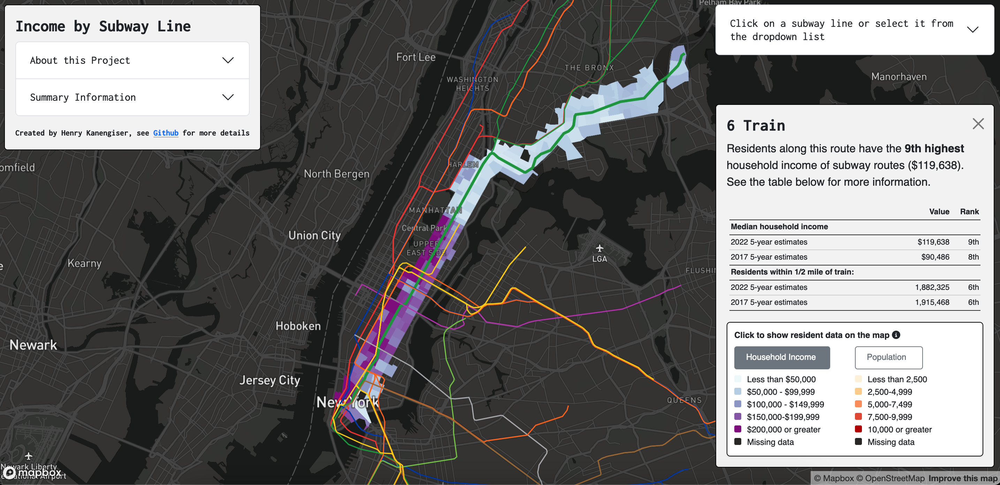

Welcome to my website! My name is Henry, I'm a planner-researcher who is passionate about sustainability, mobility, and equity. I enjoy using data visualization and storytelling to inform, engage, and empower people who otherwise may not be given a voice to make decisions. I'm a skilled researcher, writer, data analyst, and communicator with experience working at non-profits and within several public sector agencies.
I live and work in New York City. Feel free to reach out about any of my projects or if you're interested in collaborating on a project.


Links will go here
Resume
GitHub